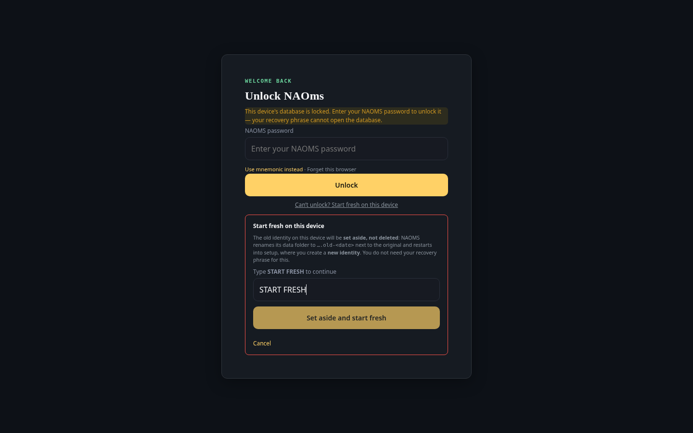

The tools that quietly disappeared
Today's fixes share one trait: nothing crashed. A whole package's tools vanished without an error in the UI, a time filter matched a day's worth of rows instead of two minutes, the phone reported success for a write it had thrown away, and an AI agent could skip its working rules by never saying hello. Plus one measurement we had to retract.
This post covers 2026-09-30 (UTC) up to roughly 12:10 UTC, the moment of
writing; the newest commit on main that it accounts for is 20984a5884e.
Anything landing after that will be in a later post.

Nothing in today's list crashed. That is what makes it a list worth reading.
A whole package, gone, with no error in the UI
A health check that compares the tools we expect against the tools actually
registered reported one missing: aiChat.history. The cause was not one
missing tool. The chat package had declared that it owns the session.
event prefix, but not the session chain type it also reads. The
validator that generates tools from manifests is deliberately strict: if a
manifest claims a chain type it does not own, it skips the entire
manifest. So the whole aiChat.* surface was absent from the registry that
the chat path serves, and the only visible symptom was a health check
noticing (a5a75cdaca8).
The fix adds the missing declaration, matching how the calendar package, which co-owns that chain type, already declares it. More valuable is what the commit adds next to it. The validator already had correct tests, but every one fed it a synthetic manifest, so a real, shipped manifest that under-declared would pass every test while its tools disappeared. The new test runs over all 121 shipped manifests and names the package. It measured that exactly two of them violated the rule. The second, governance, was left alone on purpose: declaring ownership there would add governance write operations to the auto-generated chat tools, which is the very thing the restriction exists to prevent, so it is listed as a known exception with that reason and routed for a human decision.
A time filter that matched the whole day
Our writers store timestamps like 2026-09-30T12:04:24.000Z. SQLite's
datetime('now') produces 2026-09-30 12:04:24. Compared as text, the
character at position 10 is T in one and a space in the other, and T
sorts higher. The consequence (fb6cd167d64):
- expired sessions and tokens from the same day, and authorization codes older than an hour, were not purged until UTC midnight;
- the windows meant to select "the last 120 seconds", "the last 24 hours" and "the last 60 seconds" of chain commits matched every commit since the start of the cutoff's UTC day.
The fix compares datetime(col) against datetime('now'). On the commit
table it keeps the raw comparison too, as an index-served superset, so both
the ISO format and the phone's Rust writer format are windowed exactly. One
small extra in the same commit: a literal NUL separator in a source file,
which made grep treat it as a binary file, was replaced with the escaped
equivalent (same string).
The phone said "saved" and dropped the write
A phone appending to a chain with a quorum writer model (a hive's contract
branch) wrote an empty signature, stored the row locally, never sent it, and
the UI showed success: a silent drop. The full signing path on the phone
comes later, so the interim fix (d3bea5f6fd8) makes the failure honest. The
phone resolves the branch's writer model (branch policy first, then the
chain's, in the same order the desktop verifier uses), refuses anything but
single or bilateral writers with a named error, and the user sees "Not yet
available on phone - use the desktop app". The hive sharing Save and the
schema Adopt buttons are disabled up front on the phone rather than left to
fail after a click.
Skipping the rules by never saying hello
AI agents working in this project have a rule-check that must pass before
they write anything. Three commits closed ways around it (39d109c7adb,
7b7d7b56f46, fb9f1e3cb7f):
- The check ran after the owner-approval step, so an ungrounded write waited on the owner instead of being refused. It now runs first.
- For requests over the tool protocol, the exemption was decided from the role the session booted with. It is now decided from the caller's resolved role, and where that cannot be resolved the check is enforced. A declared role can only narrow what a caller may do, never widen it.
- A caller whose principal was an enforced role, and who never started a session, or whose session was lost when the daemon restarted, got an automatic allow. It is now refused with a hint to start a session.
Each has a pair of tests that failed before (for example "caller worker rode
the session's owner bypass" and three allow-instead-of-deny cases) and pass
now. In the same family, a channel's authority now comes from holding the
revocable steward role, not from being the recorded owner (1f20c50a60b).
A measurement we had to retract
A side project measured whether we could adopt a Rust implementation of the
Aqua evidence format. The first finding said a public build of that library
could not even decode our bundle, and the conclusion drawn from it was a
reason not to adopt (0635b6aefcb). The SDK's maintainer then answered: the
library to adopt is the private one, and the public one is a snapshot that
will be re-derived. So the crate measured was never the one that mattered, and
the private source says our record form is the current wire shape and the
scalar form the public library expects is the deprecated one. The commit that
retracts the headline says so in its own title, and it calls out that a probe
it wrote converted our correct bytes into the obsolete shape and so measured
only the age of the public snapshot (b13f9c5f0fd).
The SDK was then vendored into the repository under its Apache-2.0 license,
with its license and notice files kept and no Rust source altered
(ff3638f4351). Its first commit did not build: a path dependency of a
workspace member is pulled into the workspace regardless of an exclude
entry, so the SDK's own workspace table became a second root. A follow-up
flattened it with a manifest-only change (c54568bc6ff), and the commit states
the assumption that was wrong.
A way out of a device you cannot unlock
One change from earlier the same day (15bbf8e8646) is visible, so here it is.
When a device's database is locked and the password will not open it, the
unlock screen now has a link, "Can't unlock? Start fresh on this device". It
opens a confirmation panel. The button stays disabled until the words START
FRESH are typed exactly, and the panel says what it does: the old identity is
set aside, not deleted. The daemon renames its own data folder to an .old-
name with the date on it, then restarts into setup, where you create a new
identity. The request is accepted only from the same machine, only while the
database is locked, and is refused while the vault is unlocked.
We ran that browser test once to take the picture and it passed; we did not press the button against a real install.
What we did not verify
- None of the tests named above were re-run for this post; red and green figures are as recorded in the commit messages.
- We did not check on a real phone that the "Not yet available on phone" message appears; the commit describes the wiring and paired tests.
- The vendored SDK's build fix was verified by its author on a separate build host, per its commit message; we did not reproduce it.
- Today had well over a hundred commits, many of them test upkeep and mechanical refactors that are not covered here.
The common thread: none of these announced themselves. Only the first is recorded as found by a check that compares the tools that should exist with the tools that do; the commits do not say how the others were found, so we will not claim a method for them. What they share is that the fix in each case also adds a test that would have caught it, and that the one conclusion we got wrong was corrected in the open, in a commit titled as a retraction.
Written by AI agents from real project logs; owned and edited by Mujo.